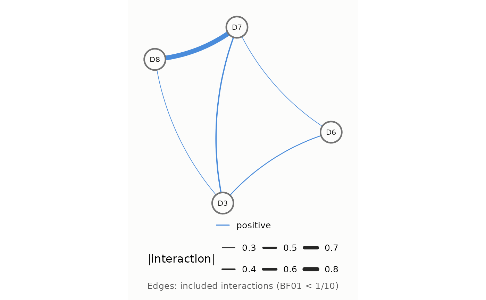
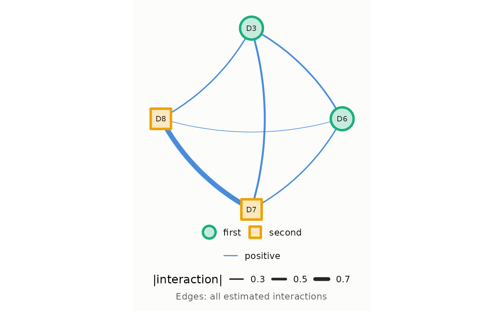
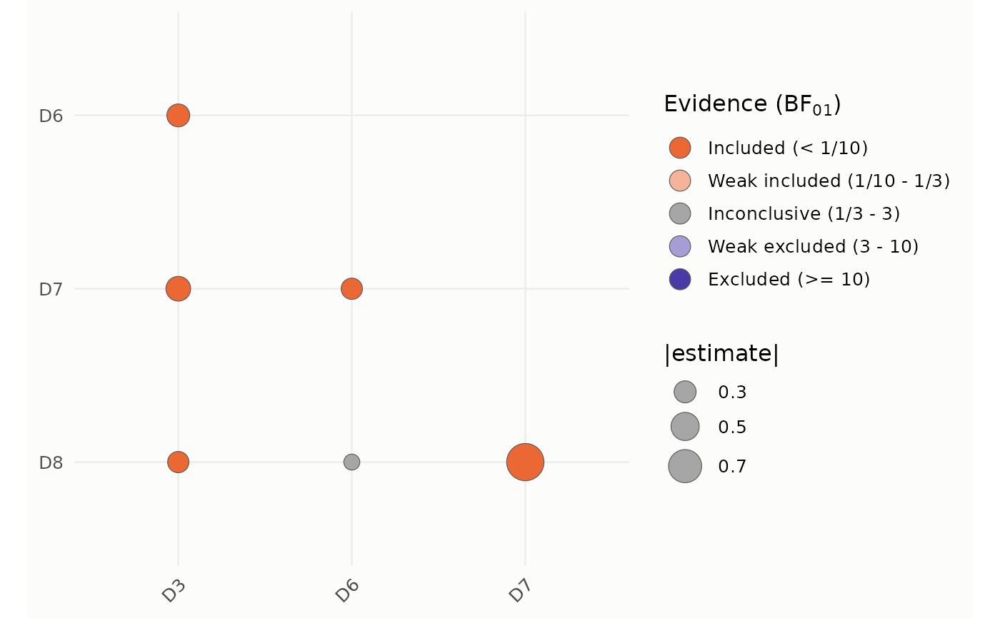
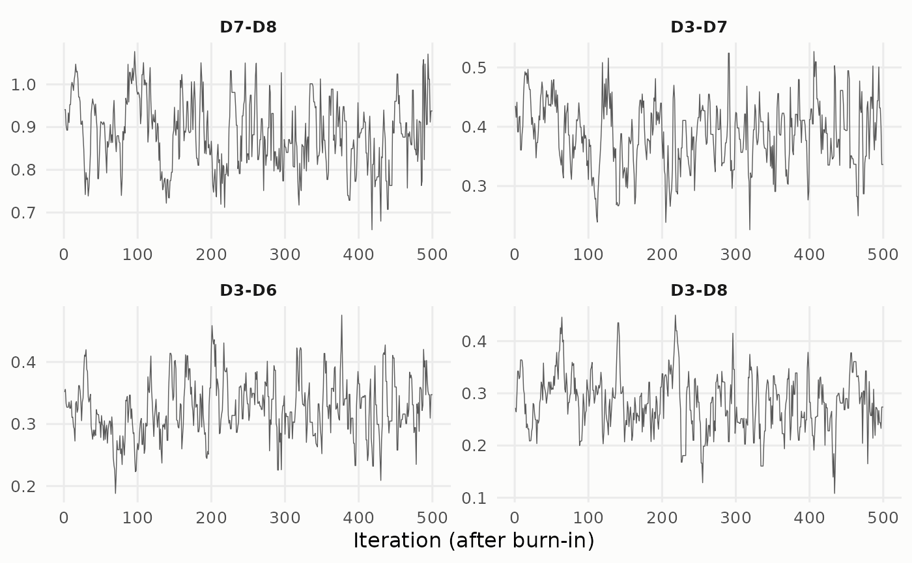
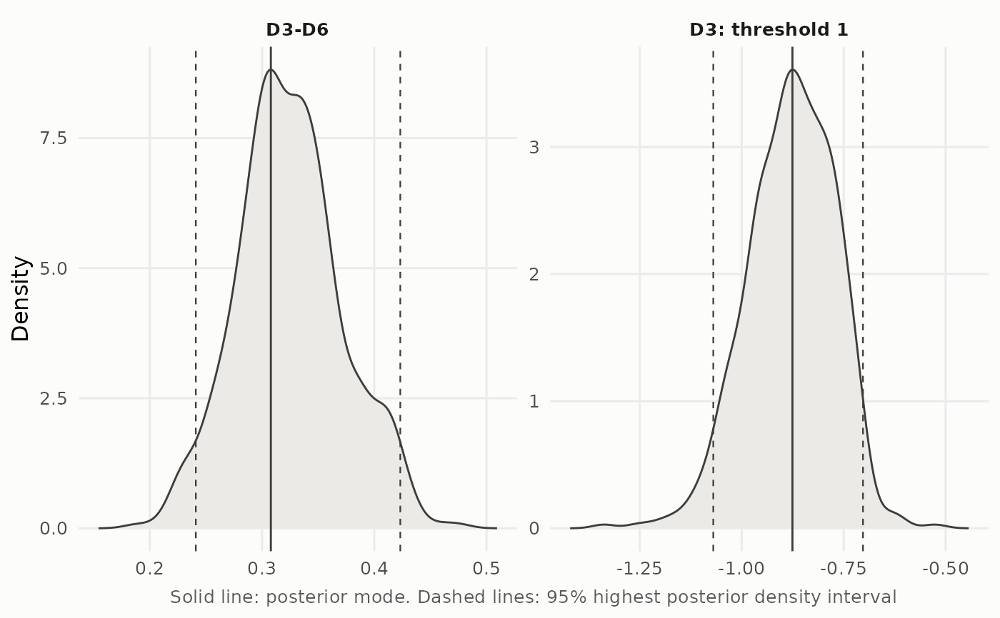
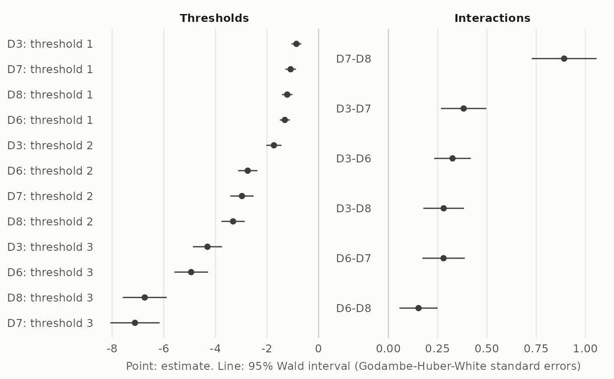
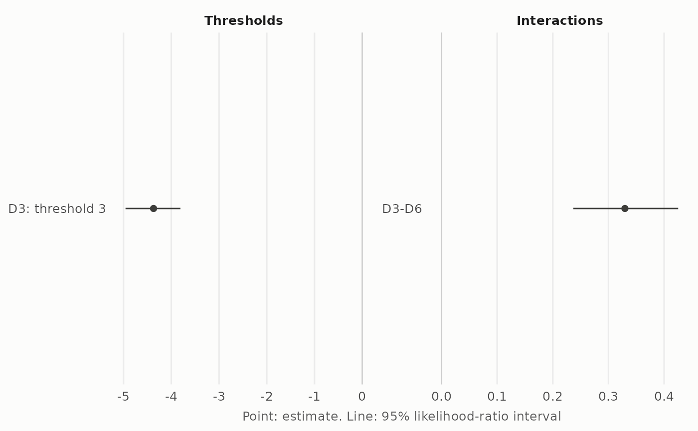
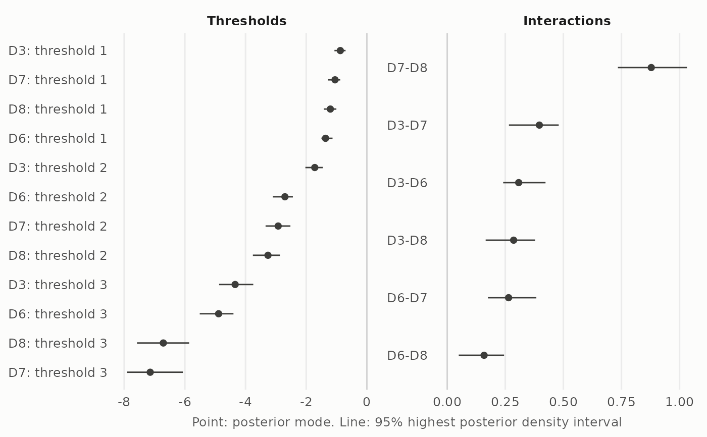
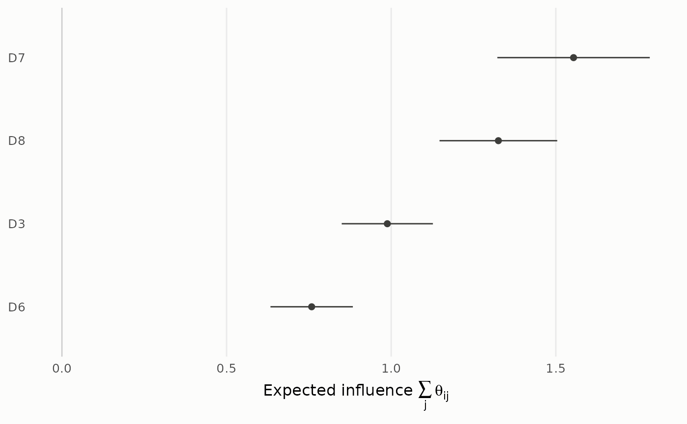
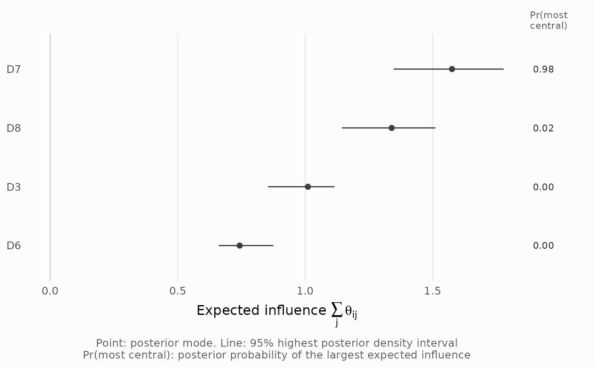

Plots of a dmrfit or dmrfit_bayes fit, made with ggplot2. The interactions are
the estimates of dmrfit(), or a posterior summary of the draws of dmrfit_bayes() (see
estimate).
type = "network"The nodes are the variables and the edges the pairwise interactions: the edge width is the absolute value of the interaction, the color and line type its sign. When the fit has Savage-Dickey Bayes factors, only the included edges are drawn (see Details).
type = "bf"One circle per pair of variables (lower triangle): its color is the evidence for the edge given by its Savage-Dickey Bayes factor (see Details) and its area the absolute value of the interaction. Requires a fit with Bayes factors.
type = "trace"The posterior draws (after burn-in) of the parameters in pars against the
iteration, one panel per parameter. Only for a dmrfit_bayes fit.
type = "density"The kernel density of the posterior draws of the parameters in pars, one
panel per parameter, with a solid line at the posterior summary chosen by estimate and dashed lines at
the highest posterior density interval of mass prob. Only for a dmrfit_bayes fit.
type = "intervals"The estimate and the interval of every parameter in pars, the thresholds
and the interactions in separate panels, each sorted by estimate. The intervals are the likelihood-ratio
intervals of a dmrfit fit computed with lrt_intervals = TRUE, otherwise its Wald intervals, both
at the level of the fit, or the highest posterior density intervals of mass prob of a
dmrfit_bayes fit (see confint.dmrfit). The caption states which.
type = "centrality"The expected influence of every variable, \(EI_i = \sum_j \theta_{ij}\), the sum
of its interactions, sorted by its estimate. For a dmrfit_bayes fit, the posterior summary chosen by
estimate and the highest posterior density interval of mass prob of the expected influence
computed on every draw, and next to it the posterior probability that the variable is the most central (the
share of draws in which its expected influence is the largest). For a dmrfit fit, the estimate and its
Wald interval at the level of the fit; the standard error of a sum of interactions follows from their
Godambe-Huber-White (GHW) covariance.
a dmrfit or dmrfit_bayes object.
the plot: "network" (default), "bf", "trace", "density",
"intervals" or "centrality".
the posterior summary of the interactions of a dmrfit_bayes fit: "mode" (default) the
marginal posterior mode, the maximum of the kernel density estimate of the draws (stats::density),
"mean" or "median". The mode is the default because the posterior can be asymmetric in small
samples, which moves the mean and the median away from the mode; Arena and Marsman (2026) found this for the
thresholds of rarely chosen response categories. Ignored for a dmrfit fit, which has point estimates.
(trace, density, intervals) the parameters to show (at most 9 for trace and density): their names, as in names(x$argument) (for
instance "theta[2,1]" for the interaction between variables 2 and 1, "mu[1,2]" for the second
threshold of variable 1), or their positions in that vector. By default, the four interactions with the largest
absolute posterior summary (see estimate) for trace and density, and all the free parameters for
intervals. The parameters are labeled with the variable names.
(density, intervals, centrality) mass of the highest posterior density interval of a dmrfit_bayes fit
(default 0.95). The intervals of a dmrfit fit are at its level.
(network) logical, whether to draw every estimated interaction instead of only the included ones (default FALSE). Every estimated interaction is also drawn for a fit without Bayes factors (only the free ones for a constrained fit).
(network) optional grouping of the nodes (for instance attr(rads2, "clusters")), a vector with
one entry per variable, in the column order of the data or named by variable. At most four groups, shown by the
color and shape of the nodes.
(network) the node positions: "fr" (default) the Fruchterman-Reingold layout of igraph,
which must be installed; "circle" the nodes on a circle, in the column order of the data; or a matrix of
coordinates with two columns and one row per variable (in the column order of the data, or with the variable
names as row names), rescaled by the same factor on both axes. The "fr" layout is computed from all
estimated interactions, weighted by their absolute value, so that the nodes keep their positions when
all_edges changes.
(network) random seed of the "fr" layout (default 30); other seeds give other arrangements. The
caller's random number stream is restored on exit.
(network) size of the nodes (default 10); the labels scale with it.
logical, whether to show the explanation below the plot (default TRUE): the rule for the drawn edges, or what the points, lines and probabilities show. With FALSE, only the plot and its legends are drawn.
further arguments (currently unused).
a ggplot object, which can be modified further with ggplot2.
The evidence for an edge is classified by its Savage-Dickey Bayes factor \(BF_{01}\), the evidence for the absence of the edge: included (\(BF_{01} < 1/10\)), weak included (\(1/10 \le BF_{01} < 1/3\)), inconclusive (\(1/3 \le BF_{01} < 3\)), weak excluded (\(3 \le BF_{01} < 10\)) and excluded (\(BF_{01} \ge 10\)), shown from orange (included) through gray to violet (excluded). The network plot draws the included edges.
The edge widths of the network plot are scaled to the range of the absolute interactions drawn in each plot. To
compare widths between plots, fix the range, for instance with
+ ggplot2::scale_linewidth_continuous(limits = c(0, 1), range = c(0.3, 2.4)).
Arena, G. and Marsman, M. (2026). Bayesian inference for discrete Markov random fields through coordinate rescaling. arXiv preprint. doi:10.48550/arXiv.2601.17205
# four items of the RADS-2 data (a small network keeps the examples fast)
data(rads2)
items <- c("D3", "D6", "D7", "D8")
fit <- dmrfit(rads2[, items], with_prior = TRUE, savage_dickey = TRUE)
# network of the included edges (the default layout uses the igraph package)
if (requireNamespace("igraph", quietly = TRUE)) plot(fit)

# all estimated interactions, with the nodes grouped and placed on a circle
groups <- c("first", "first", "second", "second")
plot(fit, all_edges = TRUE, groups = groups, layout = "circle")

# evidence for every edge from its Savage-Dickey Bayes factor
plot(fit, type = "bf")

# trace and density of the posterior draws
fit_bayes <- dmrfit_bayes(rads2[, items], nsim = 500, burnin = 300, progress = FALSE)
#> Warning: Savage-Dickey: the smallest effective sample size of the interactions is 58.1; the Bayes factors may be unreliable. Consider increasing 'nsim'.
plot(fit_bayes, type = "trace")

plot(fit_bayes, type = "density", pars = c("theta[2,1]", "mu[1,1]"))

# estimates and intervals: Wald, likelihood-ratio and highest posterior density
plot(fit, type = "intervals")

fit_lrt <- dmrfit(rads2[, items], lrt_intervals = c("mu[1,3]", "theta[2,1]"))
plot(fit_lrt, type = "intervals", pars = c("mu[1,3]", "theta[2,1]"))

plot(fit_bayes, type = "intervals")

# expected influence of every variable, without the explanation below the plot
plot(fit, type = "centrality", show_comments = FALSE)

plot(fit_bayes, type = "centrality")
